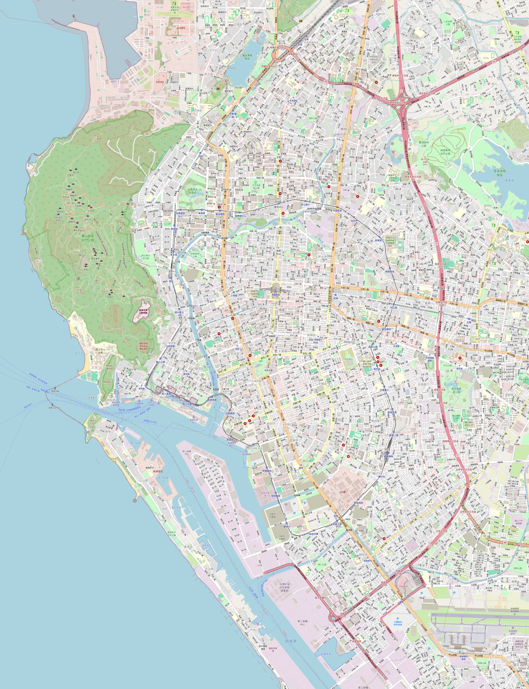

인천·김포 직항 전수 조사, 예산, 4일 일정, 오프라인 지도까지. 데이터가 없어도 열립니다.
이 날짜에만 걸리는 함정
🚨 10/25는 대만 공휴일입니다 — 게다가 3일 연휴
2026년 10월 25일(일)은 대만 광복절(台灣光復節)이고, 일요일과 겹쳐서
10월 26일(월)이 대체휴일입니다. 즉 10/24(토)~26(월)이 대만 전국 3일 연휴입니다.
"수요일(10/21) 출발 → 일요일(10/25) 귀국" 안을 잡으면 주말 이틀이 통째로 대만 연휴에 들어갑니다.
야시장·치진 페리·유명 식당·호텔 요금이 전부 연휴 모드가 됩니다.
2025년부터 신설·부활된 공휴일이라 예전 여행기에는 안 나옵니다.
✈️ "수요일 밤 출발"은 이 노선에 사실상 없습니다
인천–가오슝 직항은 정오 전후 출발이 주력입니다. 실제 검색 결과 출발 시간대는
BR145 11:45 / CI165 12:00 / TW671 13:25 정도이고, 밤 출발은 EVA BR171(20:40 → 22:55 도착)
하나뿐인데 매일 뜨지 않습니다. 10/28(수)에는 밤 출발편이 잡히지 않았습니다.
→ 결론적으로 목요일 낮 출발이 이 노선의 자연스러운 선택이고,
마침 그게 3박4일에 정확히 맞아떨어집니다.
💰 최대 NT$8,000 지원금 — 등록 마감이 10/22입니다
대만 관광청이 재방문 외국인 관광객에게 충전형 소비지원금을 추첨 지급합니다.
공식 사이트로 확인했습니다 → 5000.taiwan.net.tw
대상
2023년 1월 1일 이후 대만 입국 이력이 있는 재방문객 · 체류 3~90일 · 대만 국적 아닌 여권
금액
당첨 시 본인 NT$5,000 + 동행자 NT$3,000 = 최대 NT$8,000 (약 35만원)
대상 기간
2026.10.10 ~ 2027.3.31 입국자 → 10/29 여행은 해당됨
등록
입국 7~90일 전 온라인 사전등록 필수. 10월 1일 오전 10시(대만시간) 개시
우리 마감
10/29 입국 기준 10월 1일 ~ 10월 22일 사이에 등록해야 합니다
우리 팀 구성 (확정)
대만 방문 이력
해당 상
우리 부부 2명
2025년 방문 → 재방문 자격 있음
재방문객상 (NT$5,000) 대상
친구 부부 2명
첫 대만
재방문객상 ❌ · 동행 친지상(NT$3,000) 가능성
공식 사이트에 「재방문객상」과 「동행 친지상」이 별도로 있는 것을 확인했습니다.
즉 우리 부부가 등록의 주체가 되고, 친구 부부는 동행자로 붙는 구조입니다.
최선의 경우 — 우리 부부 2명이 각각 등록해 둘 다 당첨되고 각자 친구 한 명씩을 동행자로 붙이면
(5,000+3,000) × 2 = NT$16,000, 약 70만원. 다만 아래 미확인 사항 때문에 확정할 수 없습니다.
⚠ 이 지원금에 대해 아직 확정 못 한 것
공개된 자료들이 서로 어긋나서, 아래는 10/1에 실제 등록 폼을 보고 확인해야 합니다.
등록 시점이 출처마다 다릅니다. 인스타·언론은 "입국 7~90일 전",
주한 대만대표부 페이지는 "1~7일 전"이라고 적혀 있습니다.
후자는 2023~2025년에 하던 구 프로그램(재방문 조건 없던 추첨) 내용으로 보입니다 —
재방문 조건도, 동행 친지상도 없다고 나옵니다. 신·구 프로그램이 섞여 도는 중이라고 봐야 합니다
동행자를 몇 명까지 붙일 수 있는지 어디에도 명시돼 있지 않습니다. 1명인지, 일행 전원인지 불명
동행자도 따로 등록해야 하는지 불명. 같은 항공편·같은 일정이어야 할 가능성이 있습니다
예산 소진 시 조기 종료됩니다 — 공식 사이트에 "3/31까지 또는 예산 소진 시"로 적혀 있습니다
그래서 이렇게 하세요 — 10월 1일 오전 11시(한국시간)에 5000.taiwan.net.tw를 열어
실제 폼을 보고 판단하세요. 대만 오전 10시 = 한국 오전 11시입니다.
예산 소진 방식이라 첫날 등록이 유리합니다. 추첨이라 당첨은 어차피 보장되지 않으니
되면 보너스로 생각하고, 이것 때문에 일정을 바꾸지는 마세요.
🌀 태풍 시즌의 꼬리
대만 태풍은 7~9월에 집중되고 10월엔 발생 건수가 급감하지만 0은 아닙니다.
10월 말은 확률이 낮은 편이나, 항공권은 일정 변경 가능 조건을 확인하고
여행자보험은 항공 지연·결항 보장이 포함된 것으로 드세요.
예약 순서 (지금부터)
언제
할 일
메모
이번 주
항공권 4인 확정
B안. 위탁 수하물 온라인으로 같이 추가
이번 주
호텔 2실
메이리다오·중앙공원 일대. 무료 취소 조건으로 먼저 잡아두기
10/1 (목) 오전 11시
재방문 지원금 등록 — 우리 부부 2명
한국시간 11시 = 대만 10시 개시. 예산 소진 시 조기 종료라 첫날이 유리.
폼에서 동행자 인원·등록 시점 규칙을 직접 확인하고, 친구 부부를 동행자로 연결
D-30
여권 유효기간 4명 확인
6개월 미만이면 재발급 기간이 필요합니다
D-14
이심/유심, 여행자보험
보험은 항공 지연·결항 보장 포함 여부 확인
D-7
DAY 3 코스 4인 합의
A/B/C 중 하나로 확정
D-3
온라인 입국신고, 식당 예약
4명 각자 제출
D-1
현금 환전, 짐 분배
위탁 2개를 4인이 나눠 담기
예산 (4인 합계)
항목
금액
산출
항공
171~174만원
9/4 재조사. 위탁 15kg×4인 왕복 포함 — A안 1,708,325원 / B안 1,736,279원
숙소 3박
60~90만원
4성급 2실 × 3박, 1실 10~15만원/박
식비
50~60만원
4인 하루 15만원 × 3.5일. 야시장은 이보다 훨씬 저렴
교통·입장
15~20만원
MRT·페리·택시·전동자전거·입장료
기타
20~30만원
마사지·기념품·유심
합계
316~384만원
1인 약 79~96만원
대만 물가는 한국보다 식비가 확실히 쌉니다. 야시장 위주로 먹으면 식비는 절반까지 내려갑니다.
반대로 호텔은 성수기·연휴에 크게 뛰므로 B안(연휴 회피)의 이점이 여기서도 나옵니다.
실무 준비
입국·통신
비자 면제 — 한국 여권 90일. 여권 유효기간이 귀국일 기준 6개월 이상 남아야 안전합니다
입국신고서는 온라인으로 미리 제출할 수 있습니다. 4명 각자 해야 하니 출발 전날 한 번에 처리하세요
유심/이심 — 한국에서 이심을 미리 사두면 도착 즉시 켜집니다. 4인 중 최소 2명은 데이터가 있어야 길찾기가 편합니다
돈
대만은 현금 비중이 아직 높습니다. 야시장·페리·소규모 식당은 카드가 안 되는 곳이 많습니다
4인 기준 현금 2~3만 NTD는 준비하고, 부족하면 현지 ATM에서 인출
悠遊卡(이지카드) 또는 一卡通(아이패스)를 4장 사서 MRT·경전철·버스·편의점에 쓰세요. 편의점에서 충전됩니다
날씨·복장
10월 말 가오슝 평균 27℃, 낮 30℃ 근처. 반팔로 다닙니다
하순부터 습도가 떨어져 쾌적한 편이지만 햇볕이 강합니다 — 선크림·모자·선글라스
실내 냉방이 세고 저녁엔 선선하니 얇은 겉옷 한 장씩
치진·보얼은 걷는 양이 많습니다. 편한 신발이 이번 여행 최대 변수
앱
Google 지도 — 출국 전 오프라인 지도를 반드시 받아두세요. 프로필 → 오프라인 지도 → 직접 지도 선택 → 가오슝 전체가 들어오게 범위 조절 → 다운로드. 받아두면 데이터 없이도 파란 점·장소 검색·자동차 경로가 됩니다(대중교통 경로만 온라인 필요). 와이파이에서 미리 하세요 — 200~400MB 정도 받습니다
Google 번역 — 중국어(번체) 오프라인 팩을 미리 내려받으세요. 카메라 메뉴판 번역이 야시장에서 데이터 없이도 됩니다
이 문서를 홈 화면에 추가해두세요(지도 탭에 방법). 비행기모드에서도 일정·항공편·지도가 그대로 열립니다
Uber — 대만에서 정상 작동. 4인이면 택시가 MRT보다 나은 구간이 많고, 언어 문제도 없습니다
번역 앱 — 메뉴판 카메라 번역이 야시장에서 유용합니다
대만에서 모르면 벌금 나오는 것
🚫 전자담배 반입 전면 금지
대만은 전자담배 반입이 전면 금지입니다. 적발 시 몰수 + 고액 과태료.
넷 중 쓰는 사람이 있으면 아예 두고 가세요. 실수로 캐리어에 남아있는 경우가 많습니다.
🚇 MRT 안에서는 물도 못 마십니다
개찰구 안쪽부터 음식·음료 전부 금지이고 물도 포함입니다. 버블티 들고 타면 안 됩니다.
과태료는 NT$1,500~7,500 (약 6만~30만원). 마시던 음료는 개찰구 전에 정리하세요.
🍖 육류·과일·채소 반입 금지
입국 시 육류·과일·채소·발효식품 반입이 금지됩니다. 기내식으로 받은 과일도 들고 내리지 마세요.
알아두면 편한 것
온라인 입국신고서가 필수입니다. 종이 신고서가 폐지돼서 온라인으로만 제출합니다.
도착 7일 전부터 가능하니 출발 전날 4명 것을 한 번에 처리하세요
영수증은 복권입니다. 대만 영수증에는 복권 번호가 있어 당첨되면 실제로 돈을 받습니다.
앱으로 QR만 찍어두고 종이는 버려도 됩니다
음료 당도는 "우탕" — 기본 당도가 꽤 답니다. 무당은 無糖(우탕), 반당은 半糖(반탕).
이 두 단어만 알아도 실패를 줄입니다
컨택리스 카드로 대중교통 탑승 가능 — 이지카드가 없어도 됩니다.
버스는 탈 때와 내릴 때 모두 태그해야 하고, 정류장에서 손을 흔들지 않으면 그냥 지나갑니다
유바이크(YouBike)는 현지 번호 인증이 필요할 수 있습니다. 가오슝은 명소 간 거리가 애매해서
자전거가 유용한데, 이심에 현지 번호가 안 붙으면 등록이 막힐 수 있습니다 — 이심 살 때 확인하세요
호텔 조식은 계산해보고 결정 — 1인 3~5만원 하는 곳도 있는데,
현지 아침(단빙·또우장)은 1만원 이하로 훨씬 대만답습니다. 4인 × 3일이면 차이가 큽니다
구글맵 별점을 너무 믿지 마세요 — 로컬 맛집은 별점이 낮아도 맛있는 곳이 많습니다. 특히 아침식당
4인 여행에서만 생기는 함정
식당 4인석 — 인기 로컬 식당은 2인석 위주라 4명이 같이 앉기 어렵습니다. 저녁은 미리 예약하거나 시간을 당기세요
택시 — 일반 택시는 4인+짐이 빠듯합니다. 공항 이동은 MRT가 오히려 편합니다
결제 분담 — 매번 나누면 피곤합니다. 공동 지갑을 만들어 한 명이 결제하고 마지막에 정산하는 방식을 추천합니다
일정 합의 — DAY 3 갈림길처럼 선택지가 갈리는 지점을 미리 정해두세요. 현장에서 정하면 반드시 시간이 샙니다
페이스 차이 — 부부마다 체력이 다릅니다. 오후에 2시간쯤 각자 시간을 넣어두면 오히려 전체 만족도가 올라갑니다
날짜 결정 — 두 안 비교
A안 · 10/21(수)~10/25(일)
B안 · 10/29(목)~11/1(일)
대만 연휴
주말 2일이 광복절 3일 연휴에 정면으로 겹침
완전히 비켜감
항공 최저가(4인) 9/3 조회 시점
1,841,927원
1,394,711원 — 447,216원 저렴
출발
수요일 밤 편이 없어 낮 출발로 바뀜
목요일 낮 출발 = 원래 대안과 일치
숙박
3박(목·금·토) — 연휴 요금
3박(목·금·토) — 평시 요금
귀국
일요일 저녁 도착 가능
일요일 저녁 도착 가능
✅ 추천: B안 — 10/29(목) 출발 ~ 11/1(일) 귀국
같은 3박4일인데 항공만 45만원 가까이 싸고, 대만 연휴를 피하고,
"수요일 밤이 힘들면 목요일 낮도 괜찮다"는 조건에 정확히 맞습니다.
A안을 굳이 택할 이유가 이번엔 보이지 않습니다.
🚨 10/29(목)은 인천발 직항이 단 2편입니다
9/3에 적어둔 BR145(11:45)·CI165(12:00)는 목요일에 뜨지 않습니다.
에바항공은 낮편(화·수·금·토)과 밤편 BR171(일·월·목)이 요일을 나눠 맡는데 10/29는 밤편 날이고,
중화항공 CI165는 10/28·10/30·11/1엔 잡히는데 10/29만 비어 있습니다.
두 개 검색 플랫폼에서 1인 기준으로 재조회해도 동일합니다.
가는 편 — 10/29(목) 인천(ICN) 출발
편명
시각
소요 / 기종
터미널
위탁
4인 총액
메모
티웨이 TW671
13:25 → 15:55
3h30 · B737-800
인천 T1
미포함
616,173원 (1인 154,043)
유일한 낮 출발. 매일 운항
에바 BR171
20:40 → 22:55
3h15 · A321neo
인천 T1
1개 23kg
1,289,077원 (1인 322,269)
23시 도착 = 첫날은 이동만
아시아나 OZ6875
20:40 → 22:55
BR171 코드셰어
인천 T1
1개 23kg
2,033,351원
같은 비행기인데 74만원 비쌈 — 살 이유 없음
가는 편 — 10/29(목) 김포(GMP) 출발 ★ 도착이 가장 빠름
편명
시각
소요 / 기종
위탁
4인 총액
메모
제주항공 7C6121
11:00 → 13:15
3h15 · B737-800
미포함 (사전구매 1.5만/인)
784,127원 (1인 196,032)
TW671보다 2시간 40분 빠른 도착. 화·목·토 주 3회
중화항공 CI185
12:00 → 14:10
3h10
1개 23kg
1,045,007원 (1인 261,252)
위탁 포함 최저가. 10/29 운항 확인
타이거에어 IT663
20:35 → 22:40
3h05 · A320
미포함
528,128원 (1인 132,032)
전 노선 최저가지만 22:40 도착
✅ 7C6121 운항 확인 완료 — 10/29 정상 운항
제주항공 자체 운항 스케줄 시스템에서 김포→가오슝 날짜별 상태를 직접 확인했습니다.
화·목·토 주 3회 노선이고, 9/4~10/31 58일치가 예외 없이 같은 패턴입니다.
2026-10-29(목) = 정상(Normal). 판매 데이터(10/27·10/29·10/31만 판매)와도 100% 일치합니다.
※ 처음에 트립닷컴에서 "결항"으로 보였던 건 조회한 날(9/4 금)이 비운항 요일이었기 때문입니다 — 신뢰도 문제가 아닙니다.
※ 단, 주 3회라 만에 하나 결항하면 다음 제주항공 편은 이틀 뒤입니다(TW671은 매일 운항).
판단차를 안 쓴다면 두 안의 실질 차액은 2만 8천원입니다. 티웨이 위탁이 제주항공의 3배(5만 vs 1.5만)라
항공권 가격차가 수하물에서 거의 상쇄됩니다. 첫날 오후 3시간을 2만 8천원에 사는 셈이라
출발을 앞당기고 싶다면 B안이 합리적입니다.
안전을 우선한다면 A안 — 매일 운항 + 왕복 한 건이라 결항 시 복구가 빠릅니다.
예약 시 반드시
수하물은 예약 직후 온라인 사전구매. 제주항공 대만 노선 15kg 사전 15,000원 / 공항 40,000원,
티웨이 대만 노선 15kg 사전 50,000원(2026-03-30 인상). 공항 구매는 무조건 손해입니다.
코드셰어는 사지 마세요. OZ6875 = BR171, KE5700 = CI164. 같은 비행기에 4인 기준 +74만 / +61만원입니다.
터미널. 티웨이·에바·(OZ 코드셰어 포함) 인천 T1, 중화항공만 인천 T2. 김포는 국제선 청사 하나입니다.
티웨이 운임 비교. 스마트운임(위탁 15kg 포함)이 이벤트운임+5만원보다 쌀 수 있습니다.
여행자보험은 항공 지연·결항 보장 포함으로. 특히 B안(분리 발권)이면 필수에 가깝습니다.
마사지 또는 호텔 복귀대만 마사지는 한국보다 저렴합니다. 4인 예약은 미리 전화해두는 편이 안전합니다.
DAY 210/30 금 — 항구 & 섬
가오슝의 핵심. 걷는 양이 많으니 편한 신발 필수.
09:30
駁二藝術特區 (보얼예술특구, Pier-2)MRT 옌청푸역 1번 출구 도보 6분. 옛 항만 창고·부두를 리모델링한 문화예술공간.
넓게 퍼져 있어 경전철(輕軌)로 구간 이동하는 게 편합니다. 소품샵과 포토존이 많고,
써니힐에서 펑리수와 차 시음이 가능합니다 — 기념품을 여기서 미리 봐두세요.
12:00
점심 — 옌청푸 일대보얼 주변에 로컬 식당이 많습니다. 4인 좌석이 있는지 미리 확인하세요.
13:30
鼓山 페리 → 旗津 (치진섬)구산 페리 선착장에서 7분. 섬에서는 자전거를 빌려 해안도로를 도는 게 정석입니다(유바이크 있음).
볼거리 — 올드 스트리트, 치진 해수욕장, 무지개 교회, 대왕 조개, 치허우 포대, 가오슝 등대
16:30
치진 해산물 거리즉석에서 고른 해산물을 조리해줍니다. 주문 전에 가격을 반드시 확인하세요 — 시가로 부르는 집이 있습니다.
18:00
西子灣 (시쯔완) 일몰 · 打狗英國領事館가오슝 최고의 일몰 포인트. 옛 영국 영사관 언덕에서 항구를 내려다봅니다.
일몰 시각은 10월 말 기준 17:20 전후이니 시간을 앞당겨 조정하세요.
20:00
高雄流行音樂中心 야경항구변 건축물 조명. 페리 복귀 동선과 자연스럽게 이어집니다.
DAY 310/31 토 — 사원 & 선택 코스
토요일이라 어디든 붐빕니다. 오전을 일찍 시작하는 게 유리합니다.
09:00
蓮池潭 龍虎塔 (롄츠탄 용호탑)MRT 생태공원역 2번 출구에서 유바이크 추천. 용 입으로 들어가 호랑이 입으로 나오는 것이 순서입니다.
관람 동선은 용호탑 → 춘추각 → 현천상제신상 순서. 묶어서 2시간.
근처 과무사구 아파트(1.6km, 유바이크) — 9동 앞 놀이터가 포토존인데 실거주 단지라 조용히.
12:00
점심 후 갈림길 — 셋 중 하나4명 취향에 맞춰 고르세요. 아래 DAY 3 오후 — 세 가지 선택지에 정리했습니다.
18:30
瑞豐夜市 (루이펑 야시장)MRT 가오슝 아레나역 1번 출구 · 17:00~24:00. 리우허보다 현지인 비중이 훨씬 높고 규모도 큽니다. 월·수요일 휴무라 토요일이 딱 맞습니다(두 개 출처에서 동일하게 확인).
먹거리 — 호호미 소보루, 천사지파이, 고구마볼, 꿔바로우, 닭꼬치
DAY 411/1 일 — 마무리
17:00 비행기. 공항에 15:00까지 도착하면 넉넉합니다.
09:00
체크아웃 · 짐 보관호텔 프런트에 맡기거나 MRT역 코인락커를 씁니다.
10:00
衛武營國家藝術文化中心거대한 곡면 건축물. 실내라 날씨와 무관하고 사진이 잘 나옵니다. 공연이 없어도 로비 개방.
12:00
마지막 식사 + 기념품펑리수·누가크래커는 시내에서 사는 게 공항보다 쌉니다. 4인 몫을 미리 계산해서 한 번에 사세요.
14:30
공항 이동MRT 레드라인 15분. 짐 찾아 이동하는 시간까지 여유 있게.
17:00
TW672 출발 → 인천 20:45 도착
DAY 3 오후 — 세 가지 선택지
내용
이동
이런 팀에게
A. 佛光山 불광산 불타기념관
동양 최대급 불교 성지. 대불과 박물관 규모가 압도적. A(불타기념관)만 봐도 충분
고속철 쭤잉역 1번 출구 앞 3번 정류장 → E02 버스 40분
"가오슝에서만 볼 수 있는 것"을 원하는 팀
B. 台南 타이난 당일치기
대만에서 가장 오래된 도시. 사원·먹거리 밀도 최고
고속철 또는 일반열차 편도 30~50분
체력 좋고 도시 한 곳 더 보고 싶은 팀
C. 시내 여유
대형 백화점·카페·마사지·夢時代 관람차
MRT 내
부부 2쌍이면 현실적으로 이게 가장 무난
넷이 움직이면 이동 시간이 인원수만큼 늘어납니다. 화장실·간식·사진 한 번에 5~10분씩 붙어서,
2인 여행 기준 일정표를 그대로 쓰면 반드시 밀립니다.
욕심내지 말고 C안을 기본으로 잡고, 컨디션이 좋으면 B안으로 올리는 걸 권합니다.
갈 만한 곳 전체 목록 — 골라 쓰세요
위 일정은 하나의 안일 뿐입니다. 그날 컨디션대로 바꿔도 되도록 후보를 전부 펼쳐둡니다.
접근 정보는 실제 다녀온 사람의 정리를 옮긴 것이라 구체적입니다.
◎ 안 가면 아쉬운 것 (4곳)
장소
가는 법
메모
연지담 · 용호탑
MRT 생태공원역 2번 출구 + 유바이크
용 입 → 호랑이 입. 용호탑 → 춘추각 → 현천상제신상 순. 야경도 예뻐서 두 번 가도 좋음
보얼예술특구
MRT 옌청푸역 1번 출구 도보 6분
소품샵·포토존 다수. 써니힐에서 펑리수 시음
치진섬
구산 페리 7분
올드스트리트, 해수욕장, 무지개 교회, 대왕 조개, 치허우 포대, 등대
미려도역 빛의 돔
MRT 미려도역 개찰구 앞
세계에서 가장 아름다운 지하철역 2위. 5분이면 봄
◎ 시간 남으면 (도심권)
장소
가는 법
메모
다카오 영국 영사관
MRT 하마센역 1.1km
입장료 99 TWD. 대만 최초 영국 영사관, 항구 전망
시립역사박물관
MRT 옌청푸역 2번 출구
무료 · 09:00~17:00 · 월요일 휴무
하마센 철도문화공원
MRT/LRT 하마센역
철도 부지를 공원으로. 보얼과 붙어 있어 묶기 좋음
LRT 그린터널
LRT 시립미술관역
가로수가 직선으로 늘어선 구간. 미술관과 연계
아이허강
LRT 진애부두역
산책 + 유람선 야경
중앙공원
MRT 중앙공원역
도심 공원. 안에 카피바라 동물카페(유료)
과무사구 아파트
용호탑에서 1.6km
9동 앞 놀이터가 포토존. 실거주 단지라 조용히
소우산 커플 관경대
LRT 소우산공원역 도보 14분
언덕길. 야생 원숭이 주의
서우산 동물원
56번 버스 또는 택시
입장료 40 TWD. 원숭이가 자유롭게 돌아다님
웨이우잉 예술문화센터
MRT 웨이우잉역
거대 곡면 건축. 실내라 날씨 무관
◎ 반나절 이상 빼야 하는 곳
장소
가는 법
주의
불광산 불타기념관
고속철 쭤잉역 1번 출구 앞 3번 정류장 E02 버스, 40분
배차 1시간일 수 있고, 인원 차면 그냥 출발합니다(입석 불가). 4명이면 특히 시간 계산 필수
타이난
일반열차(TRA) 또는 고속철(THSR)
쓰차오 녹색터널, 안평수옥, 안평고성, 치메이 박물관
컨딩
고속철 쭤잉역 9189번 버스 또는 일일투어
대만 최남단. 닉슨 바위, 어롼비 등대, 롱판공원. 3박4일엔 무리
쇼핑 — 어디서 뭘 사나
가오슝 쇼핑은 三多商圈(산둬 상권) 한 곳이면 대부분 끝납니다.
백화점 세 개가 한 역에 붙어 있어서 4인이 흩어졌다 모이기도 쉽습니다.
⚠ 가게 정보는 반드시 현장 확인
위 가게 이름들은 널리 알려진 노포 위주로 골랐지만, 영업시간·휴무·존폐를 확인하지 않았습니다.
대만 노포는 재료 소진 시 조기 마감하는 곳이 많고, 이전·폐업도 잦습니다.
가기 전에 구글맵으로 영업 여부를 확인하고, 한 곳이 닫혔을 때를 대비해 대안을 하나씩 잡아두세요.
그리고 구글맵 별점이 낮아도 맛있는 로컬집이 많습니다 — 별점보다 현지인 비율을 보세요.
오프라인 지도 — GPS 켜면 현재 위치가 뜹니다
이 지도는 문서 안에 저장돼 있어서 데이터·와이파이가 없어도 열립니다.
비행기모드에서도 GPS는 동작하므로 파란 점(현재 위치)도 그대로 뜹니다.
위치 권한을 허용하면 파란 점이 표시됩니다

손가락으로 끌어서 이동 · 두 손가락으로 확대·축소 · 두 번 탭하면 확대
(데스크톱은 드래그 이동, Ctrl+휠 확대)
구글 지도 앱에 가오슝 오프라인 지도를 미리 받아두면 이 링크들이 데이터 없이도 열립니다.
받는 법: 구글 지도 → 프로필 → 오프라인 지도 → 직접 지도 선택 → 가오슝 전체가 들어오게 범위 조절 → 다운로드.
출국 전 와이파이에서 반드시 받아두세요.
📲 홈 화면에 추가해두세요 (이게 오프라인의 핵심)아이폰 — 사파리로 이 페이지를 열고 공유 버튼 → 홈 화면에 추가. 안드로이드 — 크롬에서 ⋮ → 홈 화면에 추가(또는 앱 설치).
한 번 추가하면 아이콘으로 실행되고, 비행기모드·데이터 없음 상태에서도 문서 전체와 지도가 그대로 열립니다.
추가 직후 한 번은 온라인 상태에서 열어 저장을 끝내주세요.